|
 |
 |
Puntos de
Inflexión Ecológica
- Cómo funcionan?
- Transformando círculos viciosos a círculos virtuosos
- Ingredientes para el éxito
- Elaboren sus propios Puntos de Inflexión Ecológica
Historias por Región
Historias por Tema
- Agricultura
- Agua y Cuencas
- Bosques
- Ecosistemas Urbanos
- Educación
- Energía
- Negocios
- Pesquerías
- Salud Pública
Videos Cortos
- Salvando un arrecife coral y una pesquería
(Filipinas) - Revitalizando vecindades urbanas con jardines comunitarios
(Nueva York) - Revirtiendo la deforestación tropical con bosques comunitarios
(Thailandia) - Rellenando aguas subterráneas con captación pluvial
(Rajastán, India) - Escapando la trampa de pesticidas
(India)
Explicando el Éxito
- Salvando un arrecife coral y una pesquería
(Filipinas) - Revitalizando vecindades urbanas con jardines comunitarios
(Nueva York) - Revirtiendo la deforestación tropical con bosques comunitarios
(Thailandia) - Rellenando aguas subterráneas con captación pluvial
(Rajastán, India) - Escapando la trampa de pesticidas
(India)

Ecología Humana: Presenta los principios de la ecología humana que sirven de fundamento a los Puntos de Inflexión Ecológica
India - Nueva Delhi - Captación Pluvial Urbana
- Breve: La captación pluvial en la escuela Shri Ram la convierte en pieza clave de un movimiento popular por atender la escasez de agua en Delhi.
- Lea la historia detallada
- Fotos tomadas por Amanda Suutari - Todas las fotos están disponibles para descargarse gratis; favor de atribuir a la fotógrafa y al sitio de Internet.
- Pulse sobre la foto para ver los detalles.

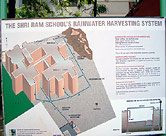
Display board with diagram

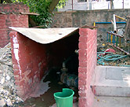
'Pump house'

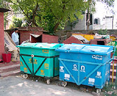
School Recycling bins

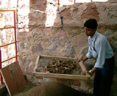
Filtering compost

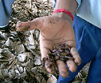
Composting worms

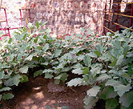
Eggplants ripening

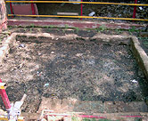
'Enzyme' pit

The staff members

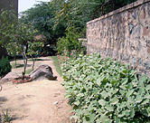
School garden

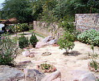
Landscaping

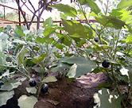
Young eggplants thriving

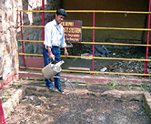
Adding water to compost

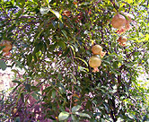
Pomegranate tree

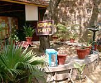
Traditional medicinal plant

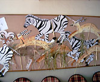
Student School mural

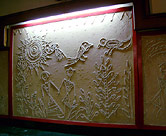
Student-made 'Fresco'

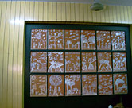
Clay designs

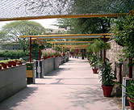
School entrance

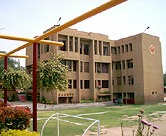
The Sri Ram School

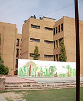
The Sri Ram School

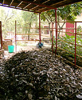
Dry waste or 'mulch'

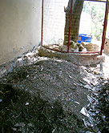
Compost

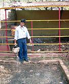
Moistening compost